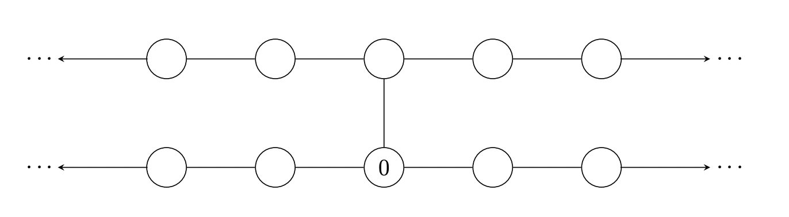
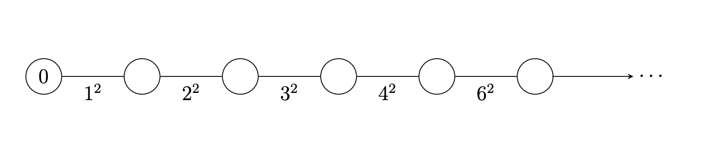
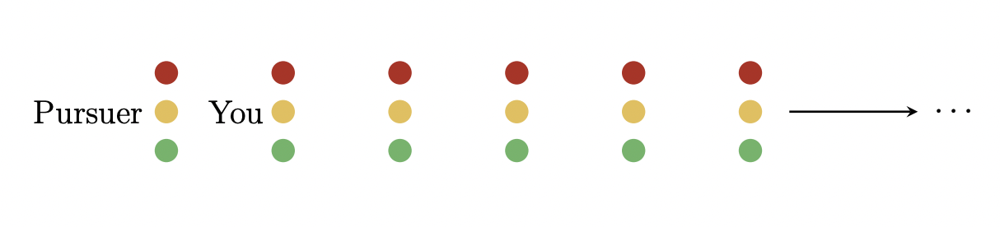

Infinite Markov Chains
Note: This is not a real problem set from the class. All of these questions are ones that I either wrote myself or found online or from textbooks. I made these to help supplement my learning and get in extra practice.
Now we take a look at infinite state Markov chains that operate in discrete time. Random walks, Gambler's ruin, Queues are all instances that can be readily modeled with infinite state Markov chains. You can access a pdf of the problem set Here, with the pdf of solutions Here.
Problem 1: Some Walks
Suppose we take a nice random walk on each of the following infinitely large Markov chains below. For each graph, classify it as positive recurrent, null-recurrent, or transient with proof. (You may appeal to any theorem from class).
- The following graph is built from two copies of $\mathbb{Z}$, by adding an edge between the two graphs at state $0$. Let $\left(X_n:n\geq 0\right)$ be a simple random walk on this graph (the Markov chain that moves from a vertex of the graph to a uniformly chosen neighbour) with $X_0$ starting at $0$. 
- Let $\left(X_n:n\geq 0\right)$ be a simple random walk on this edge-weighted random graph (the weight between vertex $i-1$ and vertex $i$ is $i^2$ for $i\in\mathbb{N}$). 
Solution
- Under construction
$\color{white}.\color{black}$
Problem 2: Car Chase
You find yourself engaged in a car chase, but it differs from the movies in one key way: Both you and the car that’s chasing you obey all traffic laws, being sure to stop at any and all red lights.
You’re trying to make it through all traffic lights, but there are infinitely many! Luckily, you’re currently one block ahead of your pursuer. Right now you’re both at a red light. The light turns green at the same time for both of you, at which point both cars begin moving east at a speed of one block per minute.
Every time that you come to an intersection, there’s a $50$ percent chance the light is green, in which case you coast right on through. But there’s also a $50$ percent chance the light is red, in which case it takes exactly one minute for the light to turn green again. These same probabilities govern your pursuer—at each intersection, they have a $50$ percent chance of encountering a green light and a $50$ percent chance of encountering a red light and having to wait one minute, entirely independent of whatever you might have encountered at that same intersection.
On average, how many minutes will it be until you are ultimately caught?
Solution
Under construction.
$\color{white}.\color{black}$
Problem 3: Gambler's Ruin With a Friend
Consider a new bar game: It’s played with a coin, between you and a friend, on a number line stretching from negative infinity to positive infinity. (It’s a very, very long bar). You are assigned a winning number, the negative integer $-X$, and your friend is assigned his own winning number, a positive integer, $+Y$. A marker is placed at zero on the number line. Then the coin is repeatedly flipped. Every time the coin lands heads, the marker is moved one integer in a positive direction. Every time the coin lands tails, the marker moves one integer in a negative direction. You win if the coin reaches $-X$ first, while your friend wins if the coin reaches $+Y$ first. (Winner keeps the coin.)
How long can you expect to sit, flipping a coin, at the bar? Put another way, what is the expected number of coin flips in a complete game?
Solution
- Under construction.